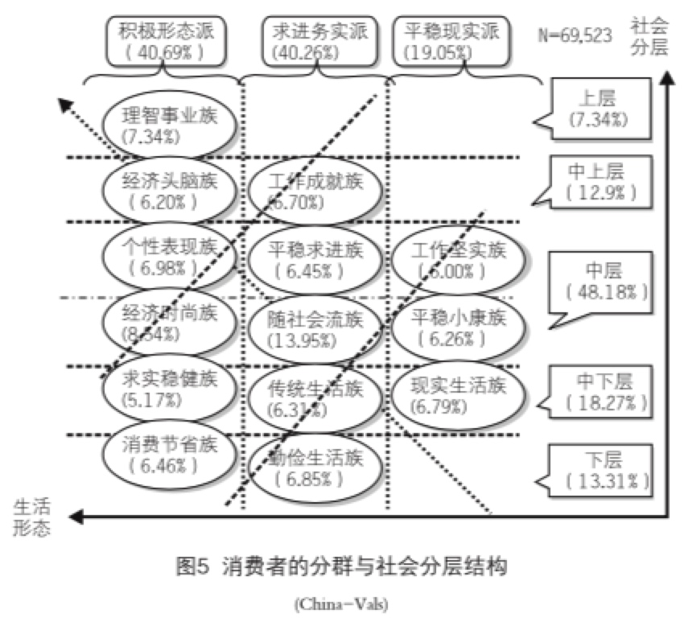

<!doctype html>
<html lang="zh" class="no-js">
  <head>
    
      <meta charset="utf-8">
      <meta name="viewport" content="width=device-width,initial-scale=1">
      
      
      
      
      
      
        
      
      
      <link rel="icon" href="../../../assets/images/favicon.png">
      <meta name="generator" content="mkdocs-1.6.1, mkdocs-material-9.7.7">
    
    
      
        <title>零售-7. 技术方案 - blog_ds</title>
      
    
    
      <link rel="stylesheet" href="../../../assets/stylesheets/main.ec1eaa64.min.css">
      
      


    
    
      
    
    
      
        
        
        <link rel="preconnect" href="https://fonts.gstatic.com" crossorigin>
        <link rel="stylesheet" href="https://fonts.googleapis.com/css?family=Roboto:300,300i,400,400i,700,700i%7CRoboto+Mono:400,400i,700,700i&display=fallback">
        <style>:root{--md-text-font:"Roboto";--md-code-font:"Roboto Mono"}</style>
      
    
    
    <script>__md_scope=new URL("../../..",location),__md_hash=e=>[...e].reduce(((e,_)=>(e<<5)-e+_.charCodeAt(0)),0),__md_get=(e,_=localStorage,t=__md_scope)=>JSON.parse(_.getItem(t.pathname+"."+e)),__md_set=(e,_,t=localStorage,a=__md_scope)=>{try{t.setItem(a.pathname+"."+e,JSON.stringify(_))}catch(e){}}</script>
    
      

    
    
  </head>
  
  
    <body dir="ltr">
  
    
    <input class="md-toggle" data-md-toggle="drawer" type="checkbox" id="__drawer" autocomplete="off">
    <input class="md-toggle" data-md-toggle="search" type="checkbox" id="__search" autocomplete="off">
    <label class="md-overlay" for="__drawer"></label>
    <div data-md-component="skip">
      
        
        <a href="#7" class="md-skip">
          跳转至
        </a>
      
    </div>
    <div data-md-component="announce">
      
    </div>
    
    
      

  

<header class="md-header md-header--shadow md-header--lifted" data-md-component="header">
  <nav class="md-header__inner md-grid" aria-label="页眉">
    <a href="../../.." title="blog_ds" class="md-header__button md-logo" aria-label="blog_ds" data-md-component="logo">
      
  
  <svg xmlns="http://www.w3.org/2000/svg" viewBox="0 0 24 24"><path d="M12 8a3 3 0 0 0 3-3 3 3 0 0 0-3-3 3 3 0 0 0-3 3 3 3 0 0 0 3 3m0 3.54C9.64 9.35 6.5 8 3 8v11c3.5 0 6.64 1.35 9 3.54 2.36-2.19 5.5-3.54 9-3.54V8c-3.5 0-6.64 1.35-9 3.54"/></svg>

    </a>
    <label class="md-header__button md-icon" for="__drawer">
      
      <svg xmlns="http://www.w3.org/2000/svg" viewBox="0 0 24 24"><path d="M3 6h18v2H3zm0 5h18v2H3zm0 5h18v2H3z"/></svg>
    </label>
    <div class="md-header__title" data-md-component="header-title">
      <div class="md-header__ellipsis">
        <div class="md-header__topic">
          <span class="md-ellipsis">
            blog_ds
          </span>
        </div>
        <div class="md-header__topic" data-md-component="header-topic">
          <span class="md-ellipsis">
            
              零售-7. 技术方案
            
          </span>
        </div>
      </div>
    </div>
    
    
      <script>var palette=__md_get("__palette");if(palette&&palette.color){if("(prefers-color-scheme)"===palette.color.media){var media=matchMedia("(prefers-color-scheme: light)"),input=document.querySelector(media.matches?"[data-md-color-media='(prefers-color-scheme: light)']":"[data-md-color-media='(prefers-color-scheme: dark)']");palette.color.media=input.getAttribute("data-md-color-media"),palette.color.scheme=input.getAttribute("data-md-color-scheme"),palette.color.primary=input.getAttribute("data-md-color-primary"),palette.color.accent=input.getAttribute("data-md-color-accent")}for(var[key,value]of Object.entries(palette.color))document.body.setAttribute("data-md-color-"+key,value)}</script>
    
    
    
      
      
        <label class="md-header__button md-icon" for="__search">
          
          <svg xmlns="http://www.w3.org/2000/svg" viewBox="0 0 24 24"><path d="M9.5 3A6.5 6.5 0 0 1 16 9.5c0 1.61-.59 3.09-1.56 4.23l.27.27h.79l5 5-1.5 1.5-5-5v-.79l-.27-.27A6.52 6.52 0 0 1 9.5 16 6.5 6.5 0 0 1 3 9.5 6.5 6.5 0 0 1 9.5 3m0 2C7 5 5 7 5 9.5S7 14 9.5 14 14 12 14 9.5 12 5 9.5 5"/></svg>
        </label>
        <div class="md-search" data-md-component="search" role="dialog">
  <label class="md-search__overlay" for="__search"></label>
  <div class="md-search__inner" role="search">
    <form class="md-search__form" name="search">
      <input type="text" class="md-search__input" name="query" aria-label="搜索" placeholder="搜索" autocapitalize="off" autocorrect="off" autocomplete="off" spellcheck="false" data-md-component="search-query" required>
      <label class="md-search__icon md-icon" for="__search">
        
        <svg xmlns="http://www.w3.org/2000/svg" viewBox="0 0 24 24"><path d="M9.5 3A6.5 6.5 0 0 1 16 9.5c0 1.61-.59 3.09-1.56 4.23l.27.27h.79l5 5-1.5 1.5-5-5v-.79l-.27-.27A6.52 6.52 0 0 1 9.5 16 6.5 6.5 0 0 1 3 9.5 6.5 6.5 0 0 1 9.5 3m0 2C7 5 5 7 5 9.5S7 14 9.5 14 14 12 14 9.5 12 5 9.5 5"/></svg>
        
        <svg xmlns="http://www.w3.org/2000/svg" viewBox="0 0 24 24"><path d="M20 11v2H8l5.5 5.5-1.42 1.42L4.16 12l7.92-7.92L13.5 5.5 8 11z"/></svg>
      </label>
      <nav class="md-search__options" aria-label="查找">
        
        <button type="reset" class="md-search__icon md-icon" title="清空当前内容" aria-label="清空当前内容" tabindex="-1">
          
          <svg xmlns="http://www.w3.org/2000/svg" viewBox="0 0 24 24"><path d="M19 6.41 17.59 5 12 10.59 6.41 5 5 6.41 10.59 12 5 17.59 6.41 19 12 13.41 17.59 19 19 17.59 13.41 12z"/></svg>
        </button>
      </nav>
      
    </form>
    <div class="md-search__output">
      <div class="md-search__scrollwrap" tabindex="0" data-md-scrollfix>
        <div class="md-search-result" data-md-component="search-result">
          <div class="md-search-result__meta">
            正在初始化搜索引擎
          </div>
          <ol class="md-search-result__list" role="presentation"></ol>
        </div>
      </div>
    </div>
  </div>
</div>
      
    
    
  </nav>
  
    
      
<nav class="md-tabs" aria-label="标签" data-md-component="tabs">
  <div class="md-grid">
    <ul class="md-tabs__list">
      
        
  
  
  
  
    <li class="md-tabs__item">
      <a href="../../.." class="md-tabs__link">
        
  
  
    
  
  首页

      </a>
    </li>
  

      
        
  
  
  
  
    <li class="md-tabs__item">
      <a href="../../../about/" class="md-tabs__link">
        
  
  
    
  
  关于我

      </a>
    </li>
  

      
        
  
  
  
  
    <li class="md-tabs__item">
      <a href="../../../topics/" class="md-tabs__link">
        
  
  
    
  
  Topic

      </a>
    </li>
  

      
        
  
  
  
  
    <li class="md-tabs__item">
      <a href="../../" class="md-tabs__link">
        
  
  
    
  
  概念

      </a>
    </li>
  

      
        
  
  
  
  
    <li class="md-tabs__item">
      <a href="../../../methods/" class="md-tabs__link">
        
  
  
    
  
  方法

      </a>
    </li>
  

      
        
  
  
  
  
    <li class="md-tabs__item">
      <a href="../../../tools/" class="md-tabs__link">
        
  
  
    
  
  工具

      </a>
    </li>
  

      
        
  
  
  
  
    <li class="md-tabs__item">
      <a href="../../../cases/" class="md-tabs__link">
        
  
  
    
  
  案例

      </a>
    </li>
  

      
        
  
  
  
  
    <li class="md-tabs__item">
      <a href="../../../relationships/" class="md-tabs__link">
        
  
  
    
  
  关系

      </a>
    </li>
  

      
        
  
  
  
  
    <li class="md-tabs__item">
      <a href="../../../syntheses/" class="md-tabs__link">
        
  
  
    
  
  综合分析

      </a>
    </li>
  

      
        
  
  
  
  
    <li class="md-tabs__item">
      <a href="../../../wiki-schema/" class="md-tabs__link">
        
  
  
    
  
  维护规范

      </a>
    </li>
  

      
    </ul>
  </div>
</nav>
    
  
</header>
    
    <div class="md-container" data-md-component="container">
      
      
        
      
      <main class="md-main" data-md-component="main">
        <div class="md-main__inner md-grid">
          
            
              
              <div class="md-sidebar md-sidebar--primary" data-md-component="sidebar" data-md-type="navigation" >
                <div class="md-sidebar__scrollwrap">
                  <div class="md-sidebar__inner">
                    


  


<nav class="md-nav md-nav--primary md-nav--lifted" aria-label="导航栏" data-md-level="0">
  <label class="md-nav__title" for="__drawer">
    <a href="../../.." title="blog_ds" class="md-nav__button md-logo" aria-label="blog_ds" data-md-component="logo">
      
  
  <svg xmlns="http://www.w3.org/2000/svg" viewBox="0 0 24 24"><path d="M12 8a3 3 0 0 0 3-3 3 3 0 0 0-3-3 3 3 0 0 0-3 3 3 3 0 0 0 3 3m0 3.54C9.64 9.35 6.5 8 3 8v11c3.5 0 6.64 1.35 9 3.54 2.36-2.19 5.5-3.54 9-3.54V8c-3.5 0-6.64 1.35-9 3.54"/></svg>

    </a>
    blog_ds
  </label>
  
  <ul class="md-nav__list" data-md-scrollfix>
    
      
      
  
  
  
  
    <li class="md-nav__item">
      <a href="../../.." class="md-nav__link">
        
  
  
  <span class="md-ellipsis">
    
  
    首页
  

    
  </span>
  
  

      </a>
    </li>
  

    
      
      
  
  
  
  
    <li class="md-nav__item">
      <a href="../../../about/" class="md-nav__link">
        
  
  
  <span class="md-ellipsis">
    
  
    关于我
  

    
  </span>
  
  

      </a>
    </li>
  

    
      
      
  
  
  
  
    <li class="md-nav__item">
      <a href="../../../topics/" class="md-nav__link">
        
  
  
  <span class="md-ellipsis">
    
  
    Topic
  

    
  </span>
  
  

      </a>
    </li>
  

    
      
      
  
  
  
  
    <li class="md-nav__item">
      <a href="../../" class="md-nav__link">
        
  
  
  <span class="md-ellipsis">
    
  
    概念
  

    
  </span>
  
  

      </a>
    </li>
  

    
      
      
  
  
  
  
    <li class="md-nav__item">
      <a href="../../../methods/" class="md-nav__link">
        
  
  
  <span class="md-ellipsis">
    
  
    方法
  

    
  </span>
  
  

      </a>
    </li>
  

    
      
      
  
  
  
  
    <li class="md-nav__item">
      <a href="../../../tools/" class="md-nav__link">
        
  
  
  <span class="md-ellipsis">
    
  
    工具
  

    
  </span>
  
  

      </a>
    </li>
  

    
      
      
  
  
  
  
    <li class="md-nav__item">
      <a href="../../../cases/" class="md-nav__link">
        
  
  
  <span class="md-ellipsis">
    
  
    案例
  

    
  </span>
  
  

      </a>
    </li>
  

    
      
      
  
  
  
  
    <li class="md-nav__item">
      <a href="../../../relationships/" class="md-nav__link">
        
  
  
  <span class="md-ellipsis">
    
  
    关系
  

    
  </span>
  
  
    
  
  
    <span class="md-status md-status--pilot"></span>
  

  

      </a>
    </li>
  

    
      
      
  
  
  
  
    <li class="md-nav__item">
      <a href="../../../syntheses/" class="md-nav__link">
        
  
  
  <span class="md-ellipsis">
    
  
    综合分析
  

    
  </span>
  
  
    
  
  
    <span class="md-status md-status--pilot"></span>
  

  

      </a>
    </li>
  

    
      
      
  
  
  
  
    <li class="md-nav__item">
      <a href="../../../wiki-schema/" class="md-nav__link">
        
  
  
  <span class="md-ellipsis">
    
  
    维护规范
  

    
  </span>
  
  
    
  
  
    <span class="md-status md-status--active"></span>
  

  

      </a>
    </li>
  

    
  </ul>
</nav>
                  </div>
                </div>
              </div>
            
            
              
              <div class="md-sidebar md-sidebar--secondary" data-md-component="sidebar" data-md-type="toc" >
                <div class="md-sidebar__scrollwrap">
                  <div class="md-sidebar__inner">
                    

<nav class="md-nav md-nav--secondary" aria-label="目录">
  
  
  
    
  
  
    <label class="md-nav__title" for="__toc">
      <span class="md-nav__icon md-icon"></span>
      目录
    </label>
    <ul class="md-nav__list" data-md-component="toc" data-md-scrollfix>
      
        <li class="md-nav__item">
  <a href="#0" class="md-nav__link">
    <span class="md-ellipsis">
      
        0.画像
      
    </span>
  </a>
  
</li>
      
        <li class="md-nav__item">
  <a href="#1" class="md-nav__link">
    <span class="md-ellipsis">
      
        1.客户细分
      
    </span>
  </a>
  
</li>
      
        <li class="md-nav__item">
  <a href="#2" class="md-nav__link">
    <span class="md-ellipsis">
      
        2.轨迹模式分析
      
    </span>
  </a>
  
</li>
      
        <li class="md-nav__item">
  <a href="#3" class="md-nav__link">
    <span class="md-ellipsis">
      
        3.用户价值分析
      
    </span>
  </a>
  
</li>
      
        <li class="md-nav__item">
  <a href="#4" class="md-nav__link">
    <span class="md-ellipsis">
      
        4. 产品分析
      
    </span>
  </a>
  
</li>
      
        <li class="md-nav__item">
  <a href="#5" class="md-nav__link">
    <span class="md-ellipsis">
      
        5.健康度分析
      
    </span>
  </a>
  
</li>
      
        <li class="md-nav__item">
  <a href="#6" class="md-nav__link">
    <span class="md-ellipsis">
      
        6.流失归因分析
      
    </span>
  </a>
  
</li>
      
        <li class="md-nav__item">
  <a href="#qq" class="md-nav__link">
    <span class="md-ellipsis">
      
        QQ
      
    </span>
  </a>
  
</li>
      
    </ul>
  
</nav>
                  </div>
                </div>
              </div>
            
          
          
            <div class="md-content" data-md-component="content">
              
              <article class="md-content__inner md-typeset">
                
                  


<blockquote>
<p>所属 Topic：<a href="../../../topics/%E6%95%B0%E5%AD%97%E9%9B%B6%E5%94%AE%E4%B8%8E%E5%95%86%E4%B8%9A%E7%A9%BA%E9%97%B4/">数字零售与商业空间</a> · 类型：概念</p>
</blockquote>
<h1 id="7">7. 技术方案<a class="headerlink" href="#7" title="Permanent link">#</a></h1>
<hr />
<p><strong>细化 消费需求+习惯</strong></p>
<p>(1) 消费需求<br />
定义：own需求+生命周期 + 同行结构<br />
基础行为 +其他知识库进行调整<br />
包含内容：<br />
- 历史行为信息<br />
- 知识库： 生命周期； 时间点； 产品阶段(产品关联)<br />
- 后验的行为特征：逛店轨迹，速度，模式</p>
<p>QQ: <br />
1. 来店频次长尾分布，怎么确定需求？<br />
冷启动的以先验知识库为主，<br />
2. global id对应的准确性</p>
<p>(2)消费习惯/性格<br />
假设：行为是由背后的习惯 + 需求推动 + 环境 + 随机 的，通过click的店+exame的店</p>
<ul>
<li>
<p>习惯/偏好<br />
当前画像中的, 需要区分一般店铺 + 餐饮<br />
category_preference, 忠诚度，购买频次<br />
brand_grade_preference (高中低挡)<br />
store的光顾频次<br />
brand_favorite_label（风格标签 ）<a href="http://wiki.aibee.cn/pages/viewpage.action?pageId=20786596">http://wiki.aibee.cn/pages/viewpage.action?pageId=20786596</a><br />
purchasing_power_score， 分类别的购买力<br />
店铺标签：风格：时尚、奢侈、在该行业下的品牌、档次、实用型、价格、功效；休闲娱乐</p>
</li>
<li>
<p>环境</p>
</li>
</ul>
<p>店铺的标签NLP。对每一个店铺，可以从马斯洛需求层面分解出一些基本元素。比如(基础实用、)</p>
<p>丰富数据维度： 当期的数据信息还是感觉不太够<br />
- 抓取对store的点评数据。 需要用户真实想法的反馈，这个很难人对人的关联到行为上，但整体上可以有<br />
- 打通是数据？？</p>
<table>
<thead>
<tr>
<th>类型</th>
<th>特点</th>
<th>诉求</th>
</tr>
</thead>
<tbody>
<tr>
<td>时尚品牌需求型</td>
<td>新潮，选择多样性，尝试新的</td>
<td>感性</td>
</tr>
<tr>
<td>高档精品需求型</td>
<td>强调功能齐全卓越、最贵的品牌</td>
<td>感性为主，间有理性</td>
</tr>
<tr>
<td>大众化需求</td>
<td>实用，物有所值，忠诚度一般</td>
<td>感性，理性兼有</td>
</tr>
<tr>
<td>功效型需求</td>
<td>实用，物有所值，强调功效性</td>
<td>理性</td>
</tr>
<tr>
<td>低价品牌</td>
<td>实惠，物超所值，成本节约</td>
<td>理性</td>
</tr>
</tbody>
</table>
<p>china-vals<br />
</p>
<hr />
<h2 id="0">0.画像<a class="headerlink" href="#0" title="Permanent link">#</a></h2>
<p>画像数据是我们的基础数据，我们需要关注的主要是用户的画像以及店铺的画像。当前画像的对象是至少来过商场的用户，对于没来过的可能潜在的用户，当前的线下数据度量不到，只能通过一些线上的办法让这类潜在用户线下化。</p>
<p>期望的用户画像是能与应用价值直接挂钩的画像，能衡量这个人的消费模式，消费心理，通过画像可以直接定位出某一类特定的人群，然后在此基础上有针对性的去做策略，提高体验，增加营收。</p>
<ul>
<li>维度： 基本属性 + 行为数据 + 消费态度</li>
<li>消费需求：用户-产品的生命周期(比如之前买过xxx或者多次浏览过某类型衣服的)</li>
</ul>
<!-- more -->

<p><strong>用户画像</strong><br />
<strong>(1) 基础属性</strong><br />
性别、年龄、婚姻状态、。。。<br />
<a href="http://wiki.aibee.cn/pages/viewpage.action?pageId=20782812">http://wiki.aibee.cn/pages/viewpage.action?pageId=20782812</a></p>
<p><strong>(2)消费行为数据</strong><br />
消费业态偏好、品牌、产品偏好、风格偏好、节假日偏好，购买频次、购买力等</p>
<p><strong>(3)消费态度/心理</strong><br />
消费态度是一个人的潜在的消费习惯，消费态度 + 外界环境条件 =&gt; 消费者的行为。而且这种消费习惯对于个性化营销是越发重要。</p>
<p>根据回顾的文献，从不同的角度进行划分会划分出不同的种类形态。而且多数研究是通过实际调查问卷的方式，收集上来用户数据，然后通过因子分析，聚类分析等方法，结合一定的理论梳理出消费习惯的偏好。比如VALS2, china-vals等。另外多数研究文献也分析了消费者类别和人群基本属性的关系，发现性别、男女、职业等是有显著差别的。<br />
列举一些相对共性的分类结果</p>
<table>
<thead>
<tr>
<th>类型</th>
<th>特点</th>
<th>诉求</th>
</tr>
</thead>
<tbody>
<tr>
<td>时尚品牌需求型</td>
<td>新潮，选择多样性，尝试新的</td>
<td>感性</td>
</tr>
<tr>
<td>高档精品需求型</td>
<td>强调功能齐全卓越、最贵的品牌</td>
<td>感性为主，间有理性</td>
</tr>
<tr>
<td>大众化需求</td>
<td>实用，物有所值，忠诚度一般</td>
<td>感性，理性兼有</td>
</tr>
<tr>
<td>功效型需求</td>
<td>实用，物有所值，强调功效性</td>
<td>理性</td>
</tr>
<tr>
<td>低价品牌</td>
<td>实惠，物超所值，成本节约</td>
<td>理性</td>
</tr>
</tbody>
</table>
<p>理论上的研究模型不太具有实践意义，只能帮助我们更好的理解这个机制；通过调查问卷的实践方式，需要一定的时间成本，而且严格来讲不同时期、不同商场类型可能对应的消费者类型也是不一样的。</p>
<p>所以对于消费态度这个维度，采取的方案如下：<br />
[x] 方案1：设计调查问卷，类似vals模型，进行消费者类型划分。<br />
[ ] 方案2：既然行为是心理动机的反应，我们把未知的消费心理当做隐变量，通过因子分析得到的因子，尽量去还原其潜在的决定模式。需要设计特征，能尽量包含这些潜在的模式。(主要是根据其逛的店铺类型，各个类型店铺的频次分布情况吧)</p>
<p>step1: 抽取特征： 用户 + 店铺 <br />
店铺的包含:</p>
<ul>
<li>店铺的类型(时尚、奢侈、平民..)</li>
<li>顾客的购物频次，</li>
</ul>
<p>A类店(次数，金额)， B类店(次数，金额)，C类店(次数，金额)。。。</p>
<p>step2: 因子分析<br />
$<span class="arithmatex"><span class="MathJax_Preview">X_{n *k}=A_{n*f} F_{f*k}</span><script type="math/tex">X_{n *k}=A_{n*f} F_{f*k}</script></span>$</p>
<p>求解出因子载荷矩阵F，即得到特征和潜在因子的对应关系。</p>
<p>step3: 解读因子含义，对用户进行聚类分群<br />
解读因子所代表的含义，并将其因子打分作为其偏好属性。基于A对用户进行聚类，得到用户分群，作为其消费类别标签<br />
对于预测：对于新来的一个样本xi，根据因子载荷矩阵转换成对应的因子向量，然后可以根据分量的大小到聚类中心距离打上标签。</p>
<p><strong>(4)消费需求</strong></p>
<p>其实是一个概率性的，我们无法准确的知道具体每一个人他这次来了商场之后的目的。所以每个人的需求我们用潜在消费倾向向量来表示：<span class="arithmatex"><span class="MathJax_Preview">P=(p_1, p_2,... p_k)</span><script type="math/tex">P=(p_1, p_2,... p_k)</script></span>(k表示k家店铺)， <span class="arithmatex"><span class="MathJax_Preview">p_i</span><script type="math/tex">p_i</script></span>表示的是他进入第i家店铺的可能性。消费需求向量的建立和更新大概从以下三个方面。</p>
<ul>
<li>
<p>该用户的历史行为信息<br />
根据历史上进店的频率统计初始化</p>
</li>
<li>
<p>知识库<br />
是一些天然的规则，比如晚上6-7点过来的，吃饭的可能性大一些。这些知识可以通过商场历史数据统计汇总，得到分时段、日期、季度等的客观知识信息。</p>
</li>
<li>
<p>生命周期<br />
主要是消费者当前所处的生活阶段，以及产品所处的阶段。</p>
<ul>
<li>消费者所处生活阶段，会有天然的知识规则：比如育儿类的，儿童玩具的需求</li>
<li>产品阶段，针对有产品周期的，比如之前买过面膜，估摸着用的差不多了。</li>
</ul>
</li>
</ul>
<p>在消费者的历史行为数据的基础上，加上知识库和生命周期信息，建立消费者来店的潜在需求信息。具体地，假设候选品类有k个，用户的初始消费倾向向量是 <span class="arithmatex"><span class="MathJax_Preview">P=(p_1, p_2,... p_k)</span><script type="math/tex">P=(p_1, p_2,... p_k)</script></span>. 根据知识库去调整新的概率大小<span class="arithmatex"><span class="MathJax_Preview">P'=(p_1', p_2',... p_k')</span><script type="math/tex">P'=(p_1', p_2',... p_k')</script></span>，比如参照历史上该商品的二次购买概率。通过潜在需求我们可以直接去做推荐</p>
<ul>
<li>逛店轨迹</li>
</ul>
<p>用户的轨迹模式在一定程度上，能表征他逛店的目的或者是一种习惯。比如漫无目的的闲逛，有目的的集中逛等。通过其在商场的模式，提取出其逛店目的一种表征。通过对用户在mall内的逛店路径 + 驻留点分析，聚类归纳出逛店模式。并保存判断模型，用于后续预测。</p>
<p><strong>店铺画像</strong></p>
<p>店铺画像数据，在衡量消费者是否满足时，需要根据消费者画像和需求情况与店铺的画像进行匹配，另外店铺画像数据对于研究店铺与店铺之间的关系也有用。</p>
<p>比如：</p>
<ul>
<li>店铺的类型(时尚、奢侈、平民..)</li>
<li>店铺的消费水平</li>
<li>店铺的面积</li>
<li>。。。</li>
</ul>
<p>标准业态分类体系：<a href="http://wiki.aibee.cn/pages/viewpage.action?pageId=20799780">http://wiki.aibee.cn/pages/viewpage.action?pageId=20799780</a></p>
<h2 id="1">1.客户细分<a class="headerlink" href="#1" title="Permanent link">#</a></h2>
<p>按照0.消费画像中的操作，我们就有了用户的消费级别的画像数据，具体的有：<br />
pid + [基础属性] + [消费偏好信息] + [消费频次信息] + [消费心理类型] + [消费来店的潜在需求信息]</p>
<p>根据消费心理的因子分析结果，将原始特征转为因子特征。基于因子特征对用户进行聚类分析，得到用户细分数据。</p>
<p>具体的应用如下：</p>
<p><strong>(1) 潜客挖掘</strong><br />
通过消费者的潜在需求信息找到店铺的候选人，结合这个人的偏好和消费心理，与店铺进行匹配，识别出高潜用户。然后及时推送信息</p>
<p><strong>(2) 运营策略</strong><br />
以消费心理和消费偏好为主，识别出候选目标用户，结合</p>
<div class="arithmatex">
<div class="MathJax_Preview">\sum w_ip_i(给券会来) -c</div>
<script type="math/tex; mode=display">\sum w_ip_i(给券会来) -c</script>
</div>
<p><strong>(3) 购物偏好</strong><br />
在客户进店之后，将客户的偏好，消费心理信息发送给店员，店员可以有针对性的引导。</p>
<h2 id="2">2.轨迹模式分析<a class="headerlink" href="#2" title="Permanent link">#</a></h2>
<p>轨迹模式分析主要包括mall粒度的轨迹，以及店铺粒度的轨迹。</p>
<p>mall粒度的：</p>
<h2 id="3">3.用户价值分析<a class="headerlink" href="#3" title="Permanent link">#</a></h2>
<h2 id="4">4. 产品分析<a class="headerlink" href="#4" title="Permanent link">#</a></h2>
<h2 id="5">5.健康度分析<a class="headerlink" href="#5" title="Permanent link">#</a></h2>
<p>健康度是用户群-店铺 pair粒度的,衡量的是一种"满意匹配"程度。这里直接从用户的后验行为来衡量这种匹配程度<br />
     G(进店人群)=p(exam)p(enter|exam)(p(action|enter)F(dt or购买) + p(离开|enter)F(不满足的损失))<br />
- 感知：因为实际目标人群无法确定，所以假设是个常数- 进入率：- action：可能是购买F=购买数量，可能是在店铺内停留时长。F=sigmoid(dt)<br />
- 离店：根据需求，若是有需求未匹配满意度是负分。</p>
<p>该指标，是用来综合衡量一个店铺在用户需求层面上是否满足的指标。分析的时候也可以拆出来(检查率，进店率，购买率)三个维度的情况。</p>
<h2 id="6">6.流失归因分析<a class="headerlink" href="#6" title="Permanent link">#</a></h2>
<p>流失原因分析<br />
用户进入店铺未发生action，最后一步转化率问题。需要建立流失预测模型，并给出每个原因比重。<br />
       eg。用户需求与店铺匹配度 + 用户画像 + 价格匹配度 + 产品品类匹配度</p>
<p>1.需求匹配度低： 无需求误进入<br />
2.有需求，需求强度<br />
用户画像，价格匹配：定位是否是店铺定位问题。需要显著性test<br />
店员服务维度（室内轨迹、引导等）<br />
品类不匹配：供货多样性<br />
不同的店铺类型需要考虑的因素不同<br />
3. 其他潜在需求？（通过用户接着去逛的其他店铺进行分析）</p>
<h2 id="qq">QQ<a class="headerlink" href="#qq" title="Permanent link">#</a></h2>
<p>最终怎么落地呢？识别目标客户后怎么将信息push出去，潜在客户不一定会来商场啊</p>


  
  


                
              </article>
            </div>
          
          
<script>var target=document.getElementById(location.hash.slice(1));target&&target.name&&(target.checked=target.name.startsWith("__tabbed_"))</script>
        </div>
        
      </main>
      
        <footer class="md-footer">
  
  <div class="md-footer-meta md-typeset">
    <div class="md-footer-meta__inner md-grid">
      <div class="md-copyright">
  
  
    Made with
    <a href="https://squidfunk.github.io/mkdocs-material/" target="_blank" rel="noopener">
      Material for MkDocs
    </a>
  
</div>
      
    </div>
  </div>
</footer>
      
    </div>
    <div class="md-dialog" data-md-component="dialog">
      <div class="md-dialog__inner md-typeset"></div>
    </div>
    
    
    
      
      
      <script id="__config" type="application/json">{"annotate": null, "base": "../../..", "features": ["navigation.tabs", "navigation.tabs.sticky", "navigation.expand"], "search": "../../../assets/javascripts/workers/search.2c215733.min.js", "tags": null, "translations": {"clipboard.copied": "\u5df2\u590d\u5236", "clipboard.copy": "\u590d\u5236", "search.result.more.one": "\u5728\u8be5\u9875\u4e0a\u8fd8\u6709 1 \u4e2a\u7b26\u5408\u6761\u4ef6\u7684\u7ed3\u679c", "search.result.more.other": "\u5728\u8be5\u9875\u4e0a\u8fd8\u6709 # \u4e2a\u7b26\u5408\u6761\u4ef6\u7684\u7ed3\u679c", "search.result.none": "\u6ca1\u6709\u627e\u5230\u7b26\u5408\u6761\u4ef6\u7684\u7ed3\u679c", "search.result.one": "\u627e\u5230 1 \u4e2a\u7b26\u5408\u6761\u4ef6\u7684\u7ed3\u679c", "search.result.other": "# \u4e2a\u7b26\u5408\u6761\u4ef6\u7684\u7ed3\u679c", "search.result.placeholder": "\u952e\u5165\u4ee5\u5f00\u59cb\u641c\u7d22", "search.result.term.missing": "\u7f3a\u5c11", "select.version": "\u9009\u62e9\u5f53\u524d\u7248\u672c"}, "version": null}</script>
    
    
      <script src="../../../assets/javascripts/bundle.d7400e89.min.js"></script>
      
        <script src="https://cdn.jsdelivr.net/npm/mermaid@10/dist/mermaid.min.js"></script>
      
        <script src="../../../js/extra.js"></script>
      
        <script src="https://cdnjs.cloudflare.com/ajax/libs/mathjax/2.7.0/MathJax.js?config=TeX-MML-AM_CHTML"></script>
      
    
  </body>
</html>